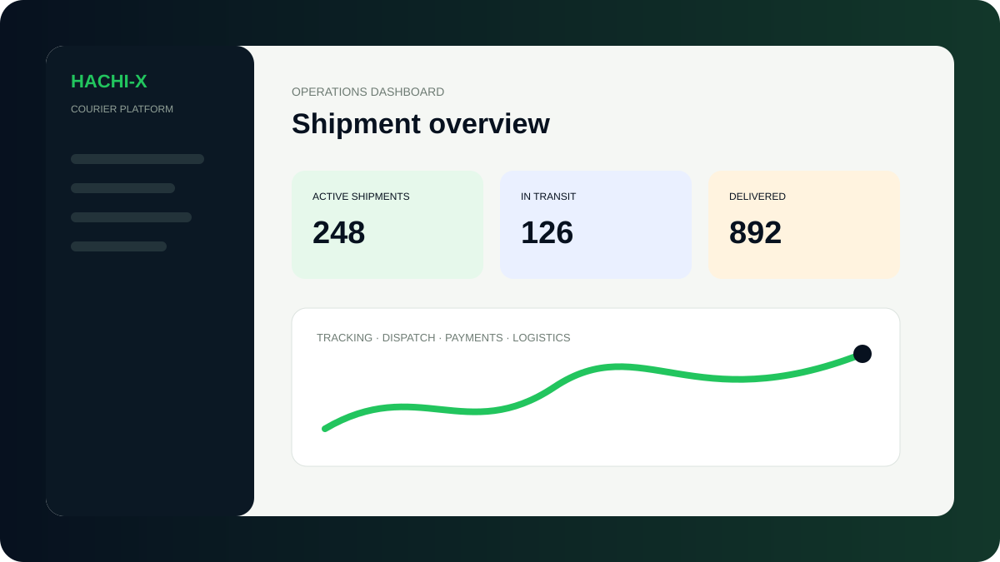
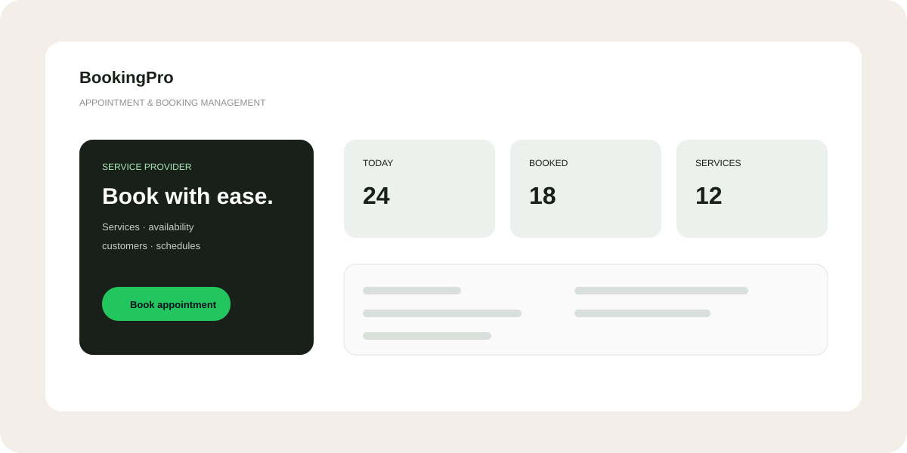

DIGITAL PRODUCTS · WEB · SOFTWARE
We build digital experiences that work.
ECE TECH SERVICES creates responsive websites, business platforms and practical software solutions for brands that want to look professional, operate smarter and grow online.
03+Years building
for the web
for the web
WEBDesign, development
& digital solutions
& digital solutions
LAGOSNigeria · Remote
friendly
friendly
Digital solutions
made for business.
WEB DESIGN · SOFTWARE · WORDPRESS · DIGITAL MARKETING · TECH SOLUTIONS
SELECTED WORK
Projects built to solve real problems.
The portfolio is structured so more projects can be added as ECE TECH SERVICES ships new websites, apps and business platforms.

COURIER & LOGISTICS
HACHI-X
Courier management platform concept covering shipment booking, tracking, dispatch, payments and operations.
View live project ↗
BOOKING & APPOINTMENTS
BookingPro
Appointment and booking management script designed for service providers with availability and online booking flows.
View live project ↗03 / MORE TO COME
Start a project ↗Your next project
Add new work here as your portfolio grows.
WHAT WE DO
Technology with a business purpose.
From focused business websites to custom management platforms, we build around the job the technology needs to do.
Web Design & Development
Responsive websites and landing pages with clean UI, strong structure and mobile-first experiences.
HTML · CSS · JavaScript · Bootstrap · PHPCustom Software
Business platforms, dashboards, booking systems, logistics tools and web applications tailored to workflows.
PHP · MySQL · Node.js · APIsWordPress Solutions
Professional WordPress sites, Elementor builds, template-kit customisation and CMS setups.
WordPress · Elementor · CMSDigital Marketing
Campaign setup and management across Meta, TikTok, Google and Microsoft advertising channels.
Meta · TikTok · Google · Microsoft AdsHOW WE WORK
Simple process. Clear delivery.
Discover
Understand the business, audience, features and requirements.
Design
Shape the interface, user flow and visual direction.
Build
Develop the responsive website or software and functionality.
Launch
Test, deploy and prepare the solution for real users.
ABOUT ECE TECH SERVICES
Practical technology for real businesses.
ECE TECH SERVICES is a technology services brand focused on websites, software and practical digital solutions. The work combines web development, WordPress, UI-focused implementation and business automation.
Web
Responsive business websites and landing pages.
Software
Custom dashboards, booking and operations platforms.
Growth
Digital advertising and online presence support.
LET'S BUILD
Have a project in mind?
Tell ECE TECH SERVICES what you want to build and we can turn the idea into a clear digital solution.